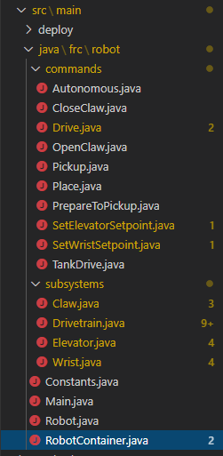

RobotBuilder Created Code#
The Layout of a RobotBuilder Generated Project#
{kind=link}

A RobotBuilder generated project consists of a package (in Java) or a folder (in C++) for Commands and another for Subsystems. Each command or subsystem object is stored under those containers. At the top level of the project you’ll find the robot main program (RobotContainer.java/C++).
For more information on the organization of a Command Based robot, see Structuring a Command-Based Robot Project
Autogenerated Code#
// BEGIN AUTOGENERATED CODE, SOURCE=ROBOTBUILDER ID=AUTONOMOUS
m_chooser.setDefaultOption("Autonomous", new Autonomous());
// END AUTOGENERATED CODE, SOURCE=ROBOTBUILDER ID=AUTONOMOUS
SmartDashboard.putData("Auto Mode", m_chooser);
// BEGIN AUTOGENERATED CODE, SOURCE=ROBOTBUILDER ID=AUTONOMOUS
m_chooser.SetDefaultOption("Autonomous", new Autonomous());
// END AUTOGENERATED CODE, SOURCE=ROBOTBUILDER ID=AUTONOMOUS
frc::SmartDashboard::PutData("Auto Mode", &m_chooser);
When the robot description is modified and code is re-exported RobotBuilder is designed to not modify any changes you made to the file, thus preserving your code. This makes RobotBuilder a full-lifecycle tool. To know what code is OK to be modified by RobotBuilder, it generates sections that will potentially have to be rewritten delimited with some special comments. These comments are shown in the example above. Don’t add any code within these comment blocks, it will be rewritten next time the project is exported from RobotBuilder.
If code inside one of these blocks must be modified, the comments can be removed, but this will prevent further updates from happening later. In the above example, if the //BEGIN and //END comments were removed, then later another required subsystem was added in RobotBuilder, it would not be generated on that next export.
// ROBOTBUILDER TYPE: Robot.
// ROBOTBUILDER TYPE: Robot.
Additionally, each file has a comment defining the type of file. If this is modified or deleted, RobotBuilder will completely regenerate the file deleting any code added both inside and outside the AUTOGENERATED CODE blocks.
Main Robot Program#
11// ROBOTBUILDER TYPE: Robot.
12
13package frc.robot;
14
15import edu.wpi.first.hal.FRCNetComm.tInstances;
16import edu.wpi.first.hal.FRCNetComm.tResourceType;
17import edu.wpi.first.hal.HAL;
18import edu.wpi.first.wpilibj.TimedRobot;
19import edu.wpi.first.wpilibj2.command.Command;
20import edu.wpi.first.wpilibj2.command.CommandScheduler;
21
22/**
23 * The VM is configured to automatically run this class, and to call the
24 * functions corresponding to each mode, as described in the TimedRobot
25 * documentation. If you change the name of this class or the package after
26 * creating this project, you must also update the build.properties file in
27 * the project.
28 */
29public class Robot extends TimedRobot { // (1)
30
31 private Command m_autonomousCommand;
32
33 private RobotContainer m_robotContainer;
34
35 /**
36 * This function is run when the robot is first started up and should be
37 * used for any initialization code.
38 */
39 @Override
40 public void robotInit() {
41 // Instantiate our RobotContainer. This will perform all our button bindings, and put our
42 // autonomous chooser on the dashboard.
43 m_robotContainer = RobotContainer.getInstance();
44 HAL.report(tResourceType.kResourceType_Framework, tInstances.kFramework_RobotBuilder);
45 }
46
47 /**
48 * This function is called every robot packet, no matter the mode. Use this for items like
49 * diagnostics that you want ran during disabled, autonomous, teleoperated and test.
50 *
51 * <p>This runs after the mode specific periodic functions, but before
52 * LiveWindow and SmartDashboard integrated updating.
53 */
54 @Override
55 public void robotPeriodic() {
56 // Runs the Scheduler. This is responsible for polling buttons, adding newly-scheduled
57 // commands, running already-scheduled commands, removing finished or interrupted commands,
58 // and running subsystem periodic() methods. This must be called from the robot's periodic
59 // block in order for anything in the Command-based framework to work.
60 CommandScheduler.getInstance().run(); // (2)
61 }
62
63
64 /**
65 * This function is called once each time the robot enters Disabled mode.
66 */
67 @Override
68 public void disabledInit() {
69 }
70
71 @Override
72 public void disabledPeriodic() {
73 }
74
75 /**
76 * This autonomous runs the autonomous command selected by your {@link RobotContainer} class.
77 */
78 @Override
79 public void autonomousInit() {
80 m_autonomousCommand = m_robotContainer.getAutonomousCommand(); // (3)
81
82 // schedule the autonomous command (example)
83 if (m_autonomousCommand != null) {
84 m_autonomousCommand.schedule();
85 }
86 }
87
88 /**
89 * This function is called periodically during autonomous.
90 */
91 @Override
92 public void autonomousPeriodic() {
93 }
94
95 @Override
96 public void teleopInit() {
97 // This makes sure that the autonomous stops running when
98 // teleop starts running. If you want the autonomous to
99 // continue until interrupted by another command, remove
100 // this line or comment it out.
101 if (m_autonomousCommand != null) {
102 m_autonomousCommand.cancel();
103 }
104 }
105
106 /**
107 * This function is called periodically during operator control.
108 */
109 @Override
110 public void teleopPeriodic() {
111 }
112
113 @Override
114 public void testInit() {
115 // Cancels all running commands at the start of test mode.
116 CommandScheduler.getInstance().cancelAll();
117 }
118
119 /**
120 * This function is called periodically during test mode.
121 */
122 @Override
123 public void testPeriodic() {
124 }
125
126}
11// ROBOTBUILDER TYPE: Robot.
12#pragma once
13
14#include <frc/TimedRobot.h>
15#include <frc2/command/Command.h>
16
17#include "RobotContainer.h"
18
19class Robot : public frc::TimedRobot { // {1}
20 public:
21 void RobotInit() override;
22 void RobotPeriodic() override;
23 void DisabledInit() override;
24 void DisabledPeriodic() override;
25 void AutonomousInit() override;
26 void AutonomousPeriodic() override;
27 void TeleopInit() override;
28 void TeleopPeriodic() override;
29 void TestPeriodic() override;
30
31 private:
32 // Have it null by default so that if testing teleop it
33 // doesn't have undefined behavior and potentially crash.
34 frc2::Command* m_autonomousCommand = nullptr;
35
36 RobotContainer* m_container = RobotContainer::GetInstance();
37};
11// ROBOTBUILDER TYPE: Robot.
12
13#include "Robot.h"
14
15#include <frc/smartdashboard/SmartDashboard.h>
16#include <frc2/command/CommandScheduler.h>
17
18void Robot::RobotInit() {}
19
20/**
21 * This function is called every robot packet, no matter the mode. Use
22 * this for items like diagnostics that you want to run during disabled,
23 * autonomous, teleoperated and test.
24 *
25 * <p> This runs after the mode specific periodic functions, but before
26 * LiveWindow and SmartDashboard integrated updating.
27 */
28void Robot::RobotPeriodic() { frc2::CommandScheduler::GetInstance().Run(); } // (2)
29
30/**
31 * This function is called once each time the robot enters Disabled mode. You
32 * can use it to reset any subsystem information you want to clear when the
33 * robot is disabled.
34 */
35void Robot::DisabledInit() {}
36
37void Robot::DisabledPeriodic() {}
38
39/**
40 * This autonomous runs the autonomous command selected by your {@link
41 * RobotContainer} class.
42 */
43void Robot::AutonomousInit() {
44 m_autonomousCommand = m_container->GetAutonomousCommand(); // {3}
45
46 if (m_autonomousCommand != nullptr) {
47 m_autonomousCommand->Schedule();
48 }
49}
50
51void Robot::AutonomousPeriodic() {}
52
53void Robot::TeleopInit() {
54 // This makes sure that the autonomous stops running when
55 // teleop starts running. If you want the autonomous to
56 // continue until interrupted by another command, remove
57 // this line or comment it out.
58 if (m_autonomousCommand != nullptr) {
59 m_autonomousCommand->Cancel();
60 m_autonomousCommand = nullptr;
61 }
62}
63
64/**
65 * This function is called periodically during operator control.
66 */
67void Robot::TeleopPeriodic() {}
68
69/**
70 * This function is called periodically during test mode.
71 */
72void Robot::TestPeriodic() {}
73
74#ifndef RUNNING_FRC_TESTS
75int main() { return frc::StartRobot<Robot>(); }
76#endif
This is the main program generated by RobotBuilder. There are a number of parts to this program (highlighted sections):
This class extends TimedRobot. TimedRobot will call your
autonomousPeriodic()andteleopPeriodic()methods every 20ms.In the robotPeriodic method which is called every 20ms, make one scheduling pass.
The autonomous command provided is scheduled at the start of autonomous in the
autonomousInit()method and canceled at the end of the autonomous period inteleopInit().
RobotContainer#
11// ROBOTBUILDER TYPE: RobotContainer.
12
13package frc.robot;
14
15import frc.robot.commands.*;
16import frc.robot.subsystems.*;
17import edu.wpi.first.wpilibj.smartdashboard.SendableChooser;
18import edu.wpi.first.wpilibj.smartdashboard.SmartDashboard;
19import edu.wpi.first.wpilibj2.command.Command.InterruptionBehavior;
20
21// BEGIN AUTOGENERATED CODE, SOURCE=ROBOTBUILDER ID=IMPORTS
22import edu.wpi.first.wpilibj2.command.Command;
23import edu.wpi.first.wpilibj2.command.InstantCommand;
24import edu.wpi.first.wpilibj.Joystick;
25import edu.wpi.first.wpilibj2.command.button.JoystickButton;
26import frc.robot.subsystems.*;
27
28 // END AUTOGENERATED CODE, SOURCE=ROBOTBUILDER ID=IMPORTS
29
30
31/**
32 * This class is where the bulk of the robot should be declared. Since Command-based is a
33 * "declarative" paradigm, very little robot logic should actually be handled in the {@link Robot}
34 * periodic methods (other than the scheduler calls). Instead, the structure of the robot
35 * (including subsystems, commands, and button mappings) should be declared here.
36 */
37public class RobotContainer {
38
39 private static RobotContainer m_robotContainer = new RobotContainer();
40
41 // BEGIN AUTOGENERATED CODE, SOURCE=ROBOTBUILDER ID=DECLARATIONS
42// The robot's subsystems
43 public final Wrist m_wrist = new Wrist(); // (1)
44 public final Elevator m_elevator = new Elevator();
45 public final Claw m_claw = new Claw();
46 public final Drivetrain m_drivetrain = new Drivetrain();
47
48// Joysticks
49private final Joystick joystick2 = new Joystick(2); // (3)
50private final Joystick joystick1 = new Joystick(1);
51private final Joystick logitechController = new Joystick(0);
52
53 // END AUTOGENERATED CODE, SOURCE=ROBOTBUILDER ID=DECLARATIONS
54
55
56 // A chooser for autonomous commands
57 SendableChooser<Command> m_chooser = new SendableChooser<>();
58
59 /**
60 * The container for the robot. Contains subsystems, OI devices, and commands.
61 */
62 private RobotContainer() {
63 // BEGIN AUTOGENERATED CODE, SOURCE=ROBOTBUILDER ID=SMARTDASHBOARD
64 // Smartdashboard Subsystems
65 SmartDashboard.putData(m_wrist); // (6)
66 SmartDashboard.putData(m_elevator);
67 SmartDashboard.putData(m_claw);
68 SmartDashboard.putData(m_drivetrain);
69
70
71 // SmartDashboard Buttons
72 SmartDashboard.putData("Close Claw", new CloseClaw( m_claw )); // (6)
73 SmartDashboard.putData("Open Claw: OpenTime", new OpenClaw(1.0, m_claw));
74 SmartDashboard.putData("Pickup", new Pickup());
75 SmartDashboard.putData("Place", new Place());
76 SmartDashboard.putData("Prepare To Pickup", new PrepareToPickup());
77 SmartDashboard.putData("Set Elevator Setpoint: Bottom", new SetElevatorSetpoint(0, m_elevator));
78 SmartDashboard.putData("Set Elevator Setpoint: Platform", new SetElevatorSetpoint(0.2, m_elevator));
79 SmartDashboard.putData("Set Elevator Setpoint: Top", new SetElevatorSetpoint(0.3, m_elevator));
80 SmartDashboard.putData("Set Wrist Setpoint: Horizontal", new SetWristSetpoint(0, m_wrist));
81 SmartDashboard.putData("Set Wrist Setpoint: Raise Wrist", new SetWristSetpoint(-45, m_wrist));
82 SmartDashboard.putData("Drive: Straight3Meters", new Drive(3, 0, m_drivetrain));
83 SmartDashboard.putData("Drive: Place", new Drive(Drivetrain.PlaceDistance, Drivetrain.BackAwayDistance, m_drivetrain));
84
85 // END AUTOGENERATED CODE, SOURCE=ROBOTBUILDER ID=SMARTDASHBOARD
86 // Configure the button bindings
87 configureButtonBindings();
88
89 // Configure default commands
90 // BEGIN AUTOGENERATED CODE, SOURCE=ROBOTBUILDER ID=SUBSYSTEM_DEFAULT_COMMAND
91 m_drivetrain.setDefaultCommand(new TankDrive(() -> getJoystick1().getY(), () -> getJoystick2().getY(), m_drivetrain)); // (5)
92
93
94 // END AUTOGENERATED CODE, SOURCE=ROBOTBUILDER ID=SUBSYSTEM_DEFAULT_COMMAND
95
96 // Configure autonomous sendable chooser
97 // BEGIN AUTOGENERATED CODE, SOURCE=ROBOTBUILDER ID=AUTONOMOUS
98
99 m_chooser.addOption("Set Elevator Setpoint: Bottom", new SetElevatorSetpoint(0, m_elevator));
100 m_chooser.addOption("Set Elevator Setpoint: Platform", new SetElevatorSetpoint(0.2, m_elevator));
101 m_chooser.addOption("Set Elevator Setpoint: Top", new SetElevatorSetpoint(0.3, m_elevator));
102 m_chooser.setDefaultOption("Autonomous", new Autonomous()); // (2)
103
104 // END AUTOGENERATED CODE, SOURCE=ROBOTBUILDER ID=AUTONOMOUS
105
106 SmartDashboard.putData("Auto Mode", m_chooser);
107 }
108
109 public static RobotContainer getInstance() {
110 return m_robotContainer;
111 }
112
113 /**
114 * Use this method to define your button->command mappings. Buttons can be created by
115 * instantiating a {@link GenericHID} or one of its subclasses ({@link
116 * edu.wpi.first.wpilibj.Joystick} or {@link XboxController}), and then passing it to a
117 * {@link edu.wpi.first.wpilibj2.command.button.JoystickButton}.
118 */
119 private void configureButtonBindings() {
120 // BEGIN AUTOGENERATED CODE, SOURCE=ROBOTBUILDER ID=BUTTONS
121// Create some buttons
122final JoystickButton r1 = new JoystickButton(logitechController, 12); // (4)
123r1.onTrue(new Autonomous().withInterruptBehavior(InterruptionBehavior.kCancelSelf));
124
125final JoystickButton l1 = new JoystickButton(logitechController, 11);
126l1.onTrue(new Place().withInterruptBehavior(InterruptionBehavior.kCancelSelf));
127
128final JoystickButton r2 = new JoystickButton(logitechController, 10);
129r2.onTrue(new Pickup().withInterruptBehavior(InterruptionBehavior.kCancelSelf));
130
131final JoystickButton l2 = new JoystickButton(logitechController, 9);
132l2.onTrue(new PrepareToPickup().withInterruptBehavior(InterruptionBehavior.kCancelSelf));
133
134final JoystickButton dpadLeft = new JoystickButton(logitechController, 8);
135dpadLeft.onTrue(new OpenClaw(1.0, m_claw).withInterruptBehavior(InterruptionBehavior.kCancelSelf));
136
137final JoystickButton dpadRight = new JoystickButton(logitechController, 6);
138dpadRight.onTrue(new CloseClaw( m_claw ).withInterruptBehavior(InterruptionBehavior.kCancelSelf));
139
140final JoystickButton dpadDown = new JoystickButton(logitechController, 7);
141dpadDown.onTrue(new SetElevatorSetpoint(0, m_elevator).withInterruptBehavior(InterruptionBehavior.kCancelSelf));
142
143final JoystickButton dpadUp = new JoystickButton(logitechController, 5);
144dpadUp.onTrue(new SetElevatorSetpoint(0.3, m_elevator).withInterruptBehavior(InterruptionBehavior.kCancelSelf));
145
146
147
148 // END AUTOGENERATED CODE, SOURCE=ROBOTBUILDER ID=BUTTONS
149 }
150
151 // BEGIN AUTOGENERATED CODE, SOURCE=ROBOTBUILDER ID=FUNCTIONS
152public Joystick getLogitechController() {
153 return logitechController;
154 }
155
156public Joystick getJoystick1() {
157 return joystick1;
158 }
159
160public Joystick getJoystick2() {
161 return joystick2;
162 }
163
164
165 // END AUTOGENERATED CODE, SOURCE=ROBOTBUILDER ID=FUNCTIONS
166
167 /**
168 * Use this to pass the autonomous command to the main {@link Robot} class.
169 *
170 * @return the command to run in autonomous
171 */
172 public Command getAutonomousCommand() {
173 // The selected command will be run in autonomous
174 return m_chooser.getSelected();
175 }
176
177
178}
11// ROBOTBUILDER TYPE: RobotContainer.
12
13#pragma once
14
15// BEGIN AUTOGENERATED CODE, SOURCE=ROBOTBUILDER ID=INCLUDES
16#include <frc/smartdashboard/SendableChooser.h>
17#include <frc2/command/Command.h>
18
19#include "subsystems/Claw.h"
20#include "subsystems/Drivetrain.h"
21#include "subsystems/Elevator.h"
22#include "subsystems/Wrist.h"
23
24#include "commands/Autonomous.h"
25#include "commands/CloseClaw.h"
26#include "commands/Drive.h"
27#include "commands/OpenClaw.h"
28#include "commands/Pickup.h"
29#include "commands/Place.h"
30#include "commands/PrepareToPickup.h"
31#include "commands/SetElevatorSetpoint.h"
32#include "commands/SetWristSetpoint.h"
33#include "commands/TankDrive.h"
34#include <frc/Joystick.h>
35#include <frc2/command/button/JoystickButton.h>
36
37 // END AUTOGENERATED CODE, SOURCE=ROBOTBUILDER ID=INCLUDES
38
39class RobotContainer {
40
41public:
42
43 frc2::Command* GetAutonomousCommand();
44 static RobotContainer* GetInstance();
45
46 // BEGIN AUTOGENERATED CODE, SOURCE=ROBOTBUILDER ID=PROTOTYPES
47// The robot's subsystems
48Drivetrain m_drivetrain; // (1)
49Claw m_claw;
50Elevator m_elevator;
51Wrist m_wrist;
52
53
54frc::Joystick* getJoystick2();
55frc::Joystick* getJoystick1();
56frc::Joystick* getLogitechController();
57
58 // END AUTOGENERATED CODE, SOURCE=ROBOTBUILDER ID=PROTOTYPES
59
60private:
61
62 RobotContainer();
63
64 // BEGIN AUTOGENERATED CODE, SOURCE=ROBOTBUILDER ID=DECLARATIONS
65// Joysticks
66frc::Joystick m_logitechController{0}; // (3)
67frc::Joystick m_joystick1{1};
68frc::Joystick m_joystick2{2};
69
70frc::SendableChooser<frc2::Command*> m_chooser;
71
72 // END AUTOGENERATED CODE, SOURCE=ROBOTBUILDER ID=DECLARATIONS
73
74Autonomous m_autonomousCommand;
75 static RobotContainer* m_robotContainer;
76
77 void ConfigureButtonBindings();
78};
11// ROBOTBUILDER TYPE: RobotContainer.
12
13#include "RobotContainer.h"
14#include <frc2/command/ParallelRaceGroup.h>
15#include <frc/smartdashboard/SmartDashboard.h>
16
17
18
19RobotContainer* RobotContainer::m_robotContainer = NULL;
20
21RobotContainer::RobotContainer() : m_autonomousCommand(
22 // BEGIN AUTOGENERATED CODE, SOURCE=ROBOTBUILDER ID=CONSTRUCTOR
23){
24
25
26
27 // END AUTOGENERATED CODE, SOURCE=ROBOTBUILDER ID=CONSTRUCTOR
28
29 // BEGIN AUTOGENERATED CODE, SOURCE=ROBOTBUILDER ID=SMARTDASHBOARD
30 // Smartdashboard Subsystems
31 frc::SmartDashboard::PutData(&m_drivetrain);
32 frc::SmartDashboard::PutData(&m_claw);
33 frc::SmartDashboard::PutData(&m_elevator);
34 frc::SmartDashboard::PutData(&m_wrist);
35
36
37 // SmartDashboard Buttons
38 frc::SmartDashboard::PutData("Drive: Straight3Meters", new Drive(3, 0, &m_drivetrain)); // (6)
39 frc::SmartDashboard::PutData("Drive: Place", new Drive(Drivetrain::PlaceDistance, Drivetrain::BackAwayDistance, &m_drivetrain));
40 frc::SmartDashboard::PutData("Set Wrist Setpoint: Horizontal", new SetWristSetpoint(0, &m_wrist));
41 frc::SmartDashboard::PutData("Set Wrist Setpoint: Raise Wrist", new SetWristSetpoint(-45, &m_wrist));
42 frc::SmartDashboard::PutData("Set Elevator Setpoint: Bottom", new SetElevatorSetpoint(0, &m_elevator));
43 frc::SmartDashboard::PutData("Set Elevator Setpoint: Platform", new SetElevatorSetpoint(0.2, &m_elevator));
44 frc::SmartDashboard::PutData("Set Elevator Setpoint: Top", new SetElevatorSetpoint(0.3, &m_elevator));
45 frc::SmartDashboard::PutData("Prepare To Pickup", new PrepareToPickup());
46 frc::SmartDashboard::PutData("Place", new Place());
47 frc::SmartDashboard::PutData("Pickup", new Pickup());
48 frc::SmartDashboard::PutData("Open Claw: OpenTime", new OpenClaw(1.0_s, &m_claw));
49 frc::SmartDashboard::PutData("Close Claw", new CloseClaw( &m_claw ));
50
51 // END AUTOGENERATED CODE, SOURCE=ROBOTBUILDER ID=SMARTDASHBOARD
52
53 ConfigureButtonBindings();
54
55 // BEGIN AUTOGENERATED CODE, SOURCE=ROBOTBUILDER ID=DEFAULT-COMMANDS
56m_drivetrain.SetDefaultCommand(TankDrive([this] {return getJoystick1()->GetY();}, [this] {return getJoystick2()->GetY();}, &m_drivetrain)); // (5)
57
58 // END AUTOGENERATED CODE, SOURCE=ROBOTBUILDER ID=DEFAULT-COMMANDS
59
60 // BEGIN AUTOGENERATED CODE, SOURCE=ROBOTBUILDER ID=AUTONOMOUS
61
62 m_chooser.AddOption("Set Elevator Setpoint: Bottom", new SetElevatorSetpoint(0, &m_elevator));
63 m_chooser.AddOption("Set Elevator Setpoint: Platform", new SetElevatorSetpoint(0.2, &m_elevator));
64 m_chooser.AddOption("Set Elevator Setpoint: Top", new SetElevatorSetpoint(0.3, &m_elevator));
65
66 m_chooser.SetDefaultOption("Autonomous", new Autonomous()); // (2)
67
68 // END AUTOGENERATED CODE, SOURCE=ROBOTBUILDER ID=AUTONOMOUS
69
70 frc::SmartDashboard::PutData("Auto Mode", &m_chooser);
71
72}
73
74RobotContainer* RobotContainer::GetInstance() {
75 if (m_robotContainer == NULL) {
76 m_robotContainer = new RobotContainer();
77 }
78 return(m_robotContainer);
79}
80
81void RobotContainer::ConfigureButtonBindings() {
82 // BEGIN AUTOGENERATED CODE, SOURCE=ROBOTBUILDER ID=BUTTONS
83
84frc2::JoystickButton m_dpadUp{&m_logitechController, 5}; // (4)
85frc2::JoystickButton m_dpadDown{&m_logitechController, 7};
86frc2::JoystickButton m_dpadRight{&m_logitechController, 6};
87frc2::JoystickButton m_dpadLeft{&m_logitechController, 8};
88frc2::JoystickButton m_l2{&m_logitechController, 9};
89frc2::JoystickButton m_r2{&m_logitechController, 10};
90frc2::JoystickButton m_l1{&m_logitechController, 11};
91frc2::JoystickButton m_r1{&m_logitechController, 12};
92
93m_dpadUp.OnTrue(SetElevatorSetpoint(0.3, &m_elevator).WithInterruptBehavior(frc2::Command::InterruptionBehavior::kCancelSelf));
94
95m_dpadDown.OnTrue(SetElevatorSetpoint(0, &m_elevator).WithInterruptBehavior(frc2::Command::InterruptionBehavior::kCancelSelf));
96
97m_dpadRight.OnTrue(CloseClaw( &m_claw ).WithInterruptBehavior(frc2::Command::InterruptionBehavior::kCancelSelf));
98
99m_dpadLeft.OnTrue(OpenClaw(1.0_s, &m_claw).WithInterruptBehavior(frc2::Command::InterruptionBehavior::kCancelSelf));
100
101m_l2.OnTrue(PrepareToPickup().WithInterruptBehavior(frc2::Command::InterruptionBehavior::kCancelSelf));
102
103m_r2.OnTrue(Pickup().WithInterruptBehavior(frc2::Command::InterruptionBehavior::kCancelSelf));
104
105m_l1.OnTrue(Place().WithInterruptBehavior(frc2::Command::InterruptionBehavior::kCancelSelf));
106
107m_r1.OnTrue(Autonomous().WithInterruptBehavior(frc2::Command::InterruptionBehavior::kCancelSelf));
108
109
110 // END AUTOGENERATED CODE, SOURCE=ROBOTBUILDER ID=BUTTONS
111}
112
113// BEGIN AUTOGENERATED CODE, SOURCE=ROBOTBUILDER ID=FUNCTIONS
114
115frc::Joystick* RobotContainer::getLogitechController() {
116 return &m_logitechController;
117}
118frc::Joystick* RobotContainer::getJoystick1() {
119 return &m_joystick1;
120}
121frc::Joystick* RobotContainer::getJoystick2() {
122 return &m_joystick2;
123}
124
125 // END AUTOGENERATED CODE, SOURCE=ROBOTBUILDER ID=FUNCTIONS
126
127
128frc2::Command* RobotContainer::GetAutonomousCommand() {
129 // The selected command will be run in autonomous
130 return m_chooser.GetSelected();
131}
This is the RobotContainer generated by RobotBuilder which is where the subsystems and operator interface are defined. There are a number of parts to this program (highlighted sections):
Each of the subsystems is declared here. They can be passed as parameters to any commands that require them.
If there is an autonomous command provided in RobotBuilder robot properties, it is added to the Sendable Chooser to be selected on the dashboard.
The code for all the operator interface components is generated here.
In addition the code to link the OI buttons to commands that should run is also generated here.
Commands to be run on a subsystem when no other commands are running are defined here.
Commands to be run via a dashboard are defined here.